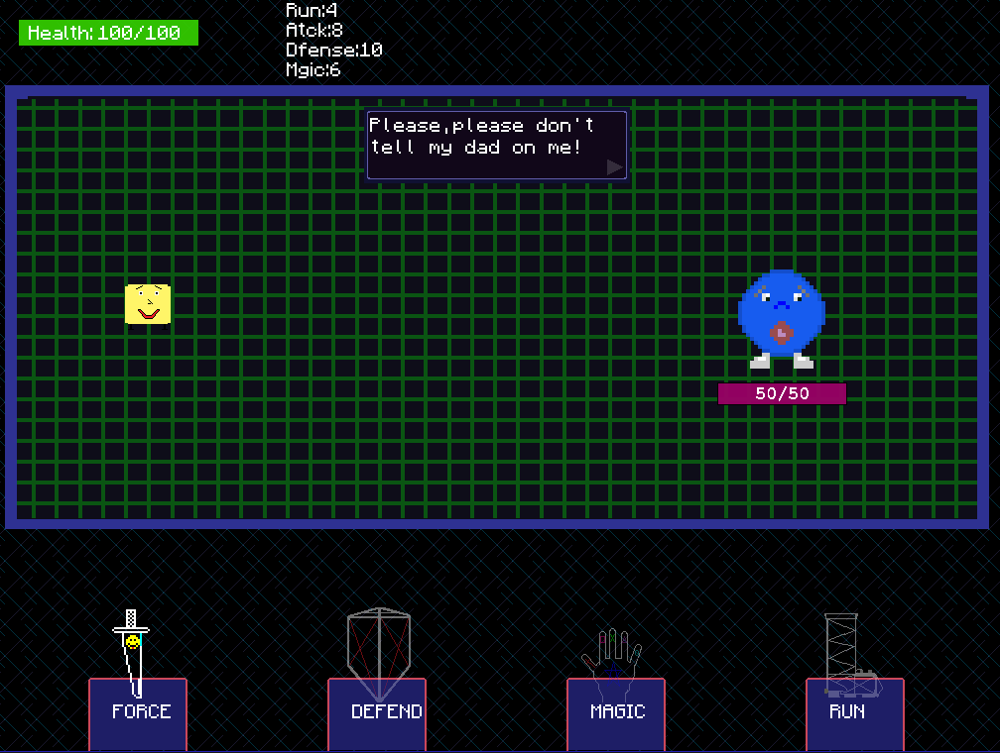
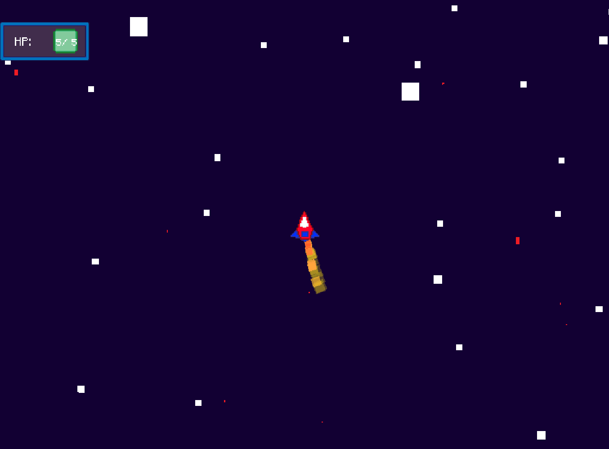
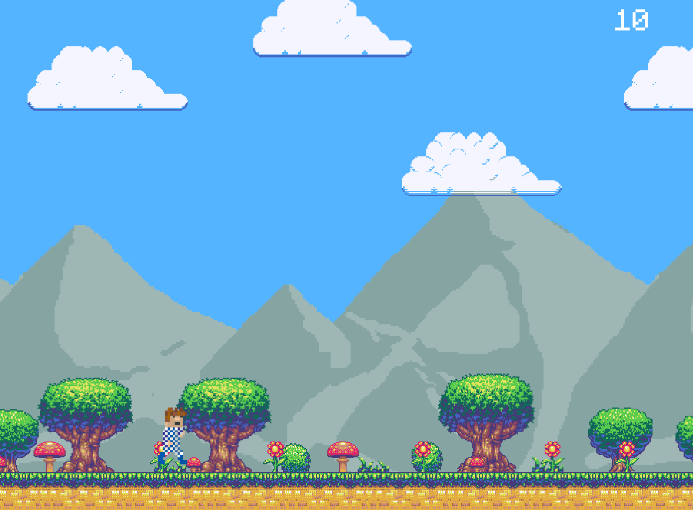
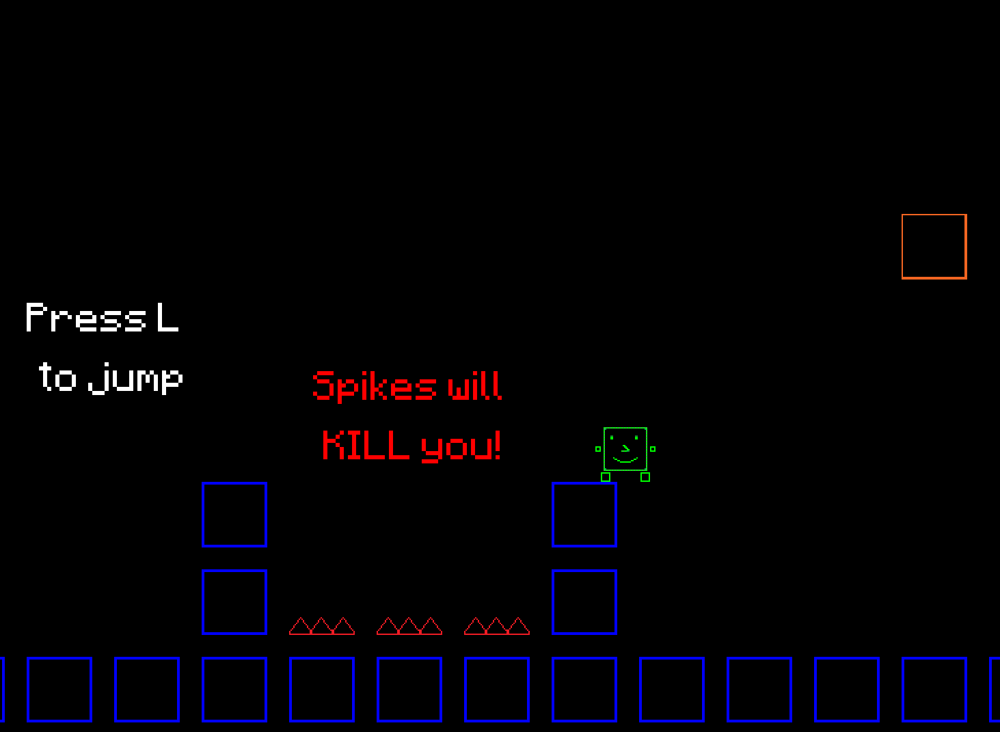
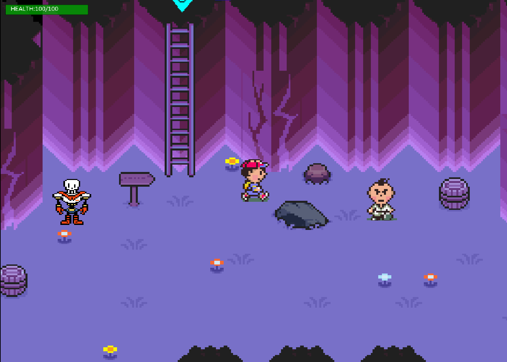
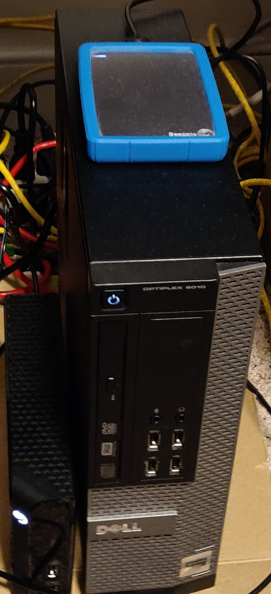

Hello and welcome to my personal site and online Portfolio! A little bit about me, I am a college
senior
finishing up my last
semester at
Salisbury University, I am receiving my Bachelor’s degree in Communications Media Production with a
minor in Computer
Science. I have quite the passion for everything Computer Science, networking, IT, programming, and
everything in between!
The last few years I have been teaching myself all that I can in my free time and in University Classes.
It all
started the summer after my freshman year, when I got an itch for game development after being
inspired
by Nintendo’s
Earthbound game series. After this, I knew I wanted to learn more about tech, and this is what
started
my journey into
this wonderful and ever evolving field and I haven’t stopped pursuing tech since. Immediately
following
my graduation in
May 2022, I will be starting my Master’s program in Cybersecurity and Information Assurance at
Western
Governor’s
University. My goal is to land a position as some sort of Software Developer after finishing graduate
school.
Experience
Over the past few years, I have accomplished quite a lot , and learned many different technologies.
This is how I did it, through a combination of self-teaching, personal projects, YouTube / online
tutorials, university
classes,
internships and quite a bit of elbow grease. Here is my story from when I started to where I am now.
Formal Education
Studying Computer Science and Web Development at my
University
I am graduating from Salisbury University with a Major in Communications Media Production. In
this track, I took
multiple classes focusing on web development with Html, Css, and JavaScript. Additionally, I
took a
minor in Computer Science,
the Computer Science track at SU is very software development based, which taught me a
lot of essential skills
that are standard in the industry. I took classes learning Java, C++, advanced C++ with
algorithms and
data
structures, computer
hardware, as well classes in calculus and discrete mathematics. I finished my minor in CS my
junior
year and all of my code,
projects, and homework’s that I have completed are available to view on my GitHub as well as my
code from the Web
development classes (once I complete them).
Pursuing a M.S. in Cybersecurity at WGU
Immediately following graduation from my undergraduate program, I will be pursuing my master’s degree
in
science focusing in Cybersecurity
and
Information Assurance at Western Governor’s University. The program will focus on secure network
design,
system
administration, IT management, ethical hacking, and secure software development. I decided to pursue
this
degree because
I think it will compliment a lot of the skills I already have very well (Linux, OS, servers,
networking,
system
administration, programming, database, web development) as well as make me more marketable on the
job
market. I am very
excited to start the program which I am starting in June following my graduation, in May 2022.
Professional Experience
Software Development with Pendant Automation
With my knowledge I had gained making games over the past year and through online videos and
tutorials I
watched, I was hopeful to find a summer job in between my sophmore and junior year doing something
tech
related. Luckily, I was able to join a
small startup that manufactures conveyer belt control systems in Havre de Grace Maryland, that gave
me a
chance to prove myself in the field. I started out as a PLC (Programmable Logic Controller)
technician
and
programmer, in which I worked with Rockwell Automation programming and testing software. When I
first
joined
the team my boss and company founder, was the only software developer at the time. He decided to
shift
my
duties to also include python and MYSQL scripting to support the ever-increasing amount of clients
we
had
with WCS (Warehouse Control System) related projects. I learned a lot and coded multiple projects
for
clients that included python, MySQL database, as well as some Linux projects involving configuration
of
raspberry Pis for automation. Other responsibilities included remote management of windows servers,
continued microcontroller testing as well as some PowerShell configuration. I continued this
internship
through the whole summer and even returned and continued interning with them in the winter. Over the
course
of my internship, we did projects for Amazon, Pampered Chef, Eby Brown, and Bd Sparks. I made many
great
connections at pendant and was sad to part ways with the team. This startup had grown dramatically
from
when
I had joined until when I left, and I hope that the company continues to grow and be successful for
many
years to come! Additionally, I was later able to receive credit for this as an internship at my
university. (This Internship Presentation can be viewed here.)
Additionally , here is a link to their company site, if you have any industrial control system
needs,
these
are the guys to
do it.
During the summer in between my Junior and Senior Year, I was able to
land a
great opportunity at John Hopkins Carey business school in Harbor East, Baltimore city. I took
on
the
role
of a
technical support analyst, in which I was responsible for assisting our students and staff /
faculty, as
well as help
with system administration of their fleet of computers. My duties included management of Active
Directory,
Microsoft
Endpoint Configuration Management console, setting up classrooms and conference rooms with
hybrid
and
remote
on-site
technology with zoom rooms, mxl microphones, and video conference cameras, imaging new laptops,
performing
upgrades and
repairs on their computers, and taking support calls via zoom to assist remote faculty and staff
as
well
as
assisting
those present on campus. By the end of the Summer, I had learned quite a bit about system
administration,
troubleshooting, OS issues, as well as working in a bigger more corporate style workplace. I
made a
bunch of
great
connections at Hopkins and still keep in touch with multiple members of my team from time to
time, I
am
very
grateful to
have had an experience to work with such a prestigious university such as Johns Hopkins as well
as
the
chance to work
with such a talented team of techs.
Personal Projects
Game Dev/Intro to Tech
After being inspired by Toby Fox, a solo developer who made the now hit game Undertale almost
entirely by
himself, using
YoYo Studios Gamemaker Studio, which comes with its own UI, built in scripting language with
Object-Oriented
functions, pixel art
editor and much more. I spent the entire summer after my freshman year working nonstop on my
MacBook
air and learning the
fundamentals of
programming as well as game design, and pixel art by working with Game Maker Studio 2. I
continued
working
on game
development in my free time throughout the next school year and even learned a bit of audio
production
to produce my own
music for the games since I took piano lessons for quite a few years. (If you are curious
about
the
music, you
can
check that out here.)
These
projects and their code are
available to
view on
my
GitHub
if you are
interested in seeing some of the game mockups I made. These first few game-dev projects will
always
hold
a special place
in my heart for introducing me into the tech field and I will always cherish game
development
for
putting me on this
exciting career path.





Some projects I made in Game Maker Studio 2
Building a Desktop
As my projects grew larger in scale, my MacBook Air wasn’t cutting it for me, with high compile
times,
due to its lack
of a GPU to process the graphics of the games, relatively small 8 gigs of memory, and a laptop
i5
processor, building my
projects was taking much longer than I would like. I decided it was time to build a desktop from
scratch
to better
handle my programming needs. I built a PC with a 9th gen i5 processor, 4GB GTX 1650 GPU, and 32
gigabytes of RAM. This
was a neat experience, because this was the first time I had ever built a PC or really worked
with
computer hardware
hands on. Since then I have built multiple computers for others, and I haven’t been scared to
open computers, swap parts, repair computers,
laptops,
game consoles etc.
I’ve fixed computers, upgraded computers and even broken a couple machines by accident in the
process,
it’s all part of
the learning experience.
My current desktop setup
Hosting my own Linux Server
Over winter break I decided I wanted to spend some time working on some personal project ideas I had.
I
wanted to make a
Linux server and use it for a multitude of personal reasons. I decided to buy a used Dell OptiPlex
desktop
computer (i5 16
gigs of ram) since I figured it would be a perfect server and it only cost a couple hundred bucks. I
installed Ubuntu
server with Ubuntu desktop overtop of it so I could access GUI applications if I needed to, although
at
this
point, I am
so comfortable in command line I usually just connect via SSH anyway. I did everything from scratch,
I
installed the OS,
setup the port forwarding and firewall rules on both my router and the UFW firewall on Linux as well
as
configuring all
the programs I needed. For my DNS I used noip2.com a free service which allowed me to get my host
name
(jerserver5712.ddns.net), I installed the update client to ensure that the DNS will update IP
changes
and
even setup a
script I found online which runs on a cron job to automatically renew the hostname for me every 30
days.
I
installed
openssh server for both sshing into the server and for sftp file transfers, I got a 4tb and 2tb
drive
for
the server to
use for remote backups. For the remote backups I use a windows tool called sshfs which you can use
to
mount
remote sftp
servers as network drives, I use this in tandem with a tool called Cobian reflector, which allows
you to
backup files to
either a remote drive, or a remote sftp server (as well as a bunch of other options). I use this
across
my
laptop and
desktop to back up my files so if anything, ever happens to one of my devices or I need to access
something
that’s on my pc I can
just access
the sftp server. I can even access it from my phone using an application called Andftp which allows
me
to
access the
files on the server and also backup my phone’s files as well. I learned a lot about bash, systemd
services,
cron jobs
and had to even do a little bash scripting to get everything configured the way I wanted. I also
wanted
this
server to
host my website, I installed apache2 web server and got everything setup properly to host my
personal
website. I also
run a Minecraft server to play with friends, which I have configured as a system service to run
automatically on startup. I additionally configured a mail server which connects to a separate Gmail
account
I made just
for the server, it emails me log files for when automatic updates are performed, whether or not the
server
needs to be
rebooted to finish the updates or if there are errors or not, and it emails me a detailed log file
from
Cobian reflector
for when a backup has completed successfully (or if the backup has errors). I learned a ton about
networking, port
forwarding, system/ server administration, a lot of bash and Linux command line and just a lot more
about
Linux overall.

The physical server I set up, hosting this website, and my other projects
Making my own website and learning Version control
After the server was set up, I figured it was time to make my personal website. I had got my feet wet
with
web
development over the Summer and would look at it here and there after work when I had the time. I
finished a
few
tutorials, and I had a firm understanding of Html, CSS and how they worked together in tandem. I
even
made
a few small
test pages to experiment around with how it all worked. However, now I decided to put it all
together
and
make a
Portfolio website, I used HTML5, CSS3, Bootstrap5 and a bit of JavaScript to develop this site.
I
went
out of my
way to optimize the site to be responsive on PCs as well as on mobile screens by using media
queries.
Additionally, I had
been familiar with GitHub and have always uploaded my projects to my page when I was finished, but I
had
never
integrated it into my workflow. Since this is the industry standard, I decided it was time to learn
it,
while making
this website project, I decided to integrate git version control into my workflow. This made it
easier
for
me to work
back and forth between my desktop at my apartment, and my laptop when I was on campus. This project
left
me
with some
great skills in web development, and also a powerful upgrade to my workflow with git version
control.
Making a Responsive Web Game with Javascript, HTML, CSS and
Canvas
(Note: This project is still in Development, this being said, this section will be updated
accordingly as
development
continues)
After making my website and also experimenting around a bit more, I felt very confident in my
skills in Html
and CSS and think it is fair to say that I have a solid grasp on both of them. I decided it was time to
learn JavaScript
to complete the trinity of Html, CSS, JavaScript. After I got used to the syntax (this didn't take too
long since i
already have a few programming languages under my belt).
I
started
learning and experimenting with the DOM functions of JavaScript, event handlers, click functions and how
it all works with HTML and CSS. I decided that making a responsive web-app game would be a great way to
to get a better handle on Javascript. A while ago, i had an idea to make and app for the app store ,
however, with the power
of JavaScript i figured it was easier to cut the hastle (and expenses) of getting an app on the app
store and make a mobile app right in your web browser,
similar to how the popular game "Wordle" beahves as a browser app. I am using Html ,CSS, Javascript, as
well as Html's canvas functions to write this game.
Moving Forward
In the next upcoming years, I am excited to continue this journey in the tech field and learn
more about
development. My goal is to hopefully land a remote role as a Software Developer, Full stack
Developer, Web Developer,
Cyber
Security
Engineer, or something closely related. Over the past few years, I think the most
important
thing I’ve
learned is that there is always more to learn, and always more ways to improve your skillset. I am
looking
forward to
continuing to grow, network, and develop as I move forward into my career.